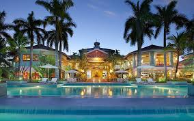

Couples Negril. A brilliant balance of elegant and eclectic. At Couples Negril, style surrounds and infuses everything in sight. From the laid-back charm of the swim-up bar to the intoxicating allure on an in-suite Jacuzzi, there’s just something about Couples Negril that says chic. Defined by imaginative, artistic features and possessing a beautiful balance of elegant and eclectic, Couples Negril is 18 acres of all-inclusive luxury, personality and pleasure. All expertly carved into the captivating landscape of Negril, Jamaica. And while our unique appointments set us apart from any other resort, our unwavering attention to your every desire has earned us recognition as the premier all-inclusive resort not only in Jamaica, but the entire Caribbean
Couples Resorts Negril offers a relaxing atmosphere with comprehensive amenities, though not ideal for party seekers, according to many travelers. Guests appreciate the friendly service, though some note occasional delays. While the location and cleanliness earn rave reviews, travelers mention that the rooms, although spacious, could use updates.The resort is generally considered reasonably priced, but some reviewers express concerns about the value due to service inconsistencies. Overall, it provides a pleasant experience for those seeking a peaceful getaway.